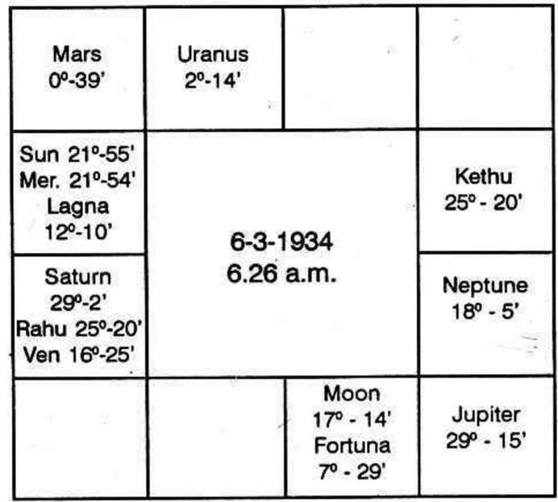
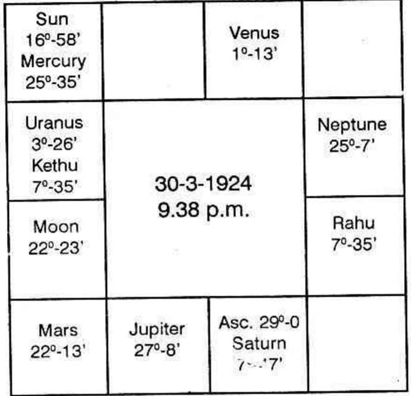
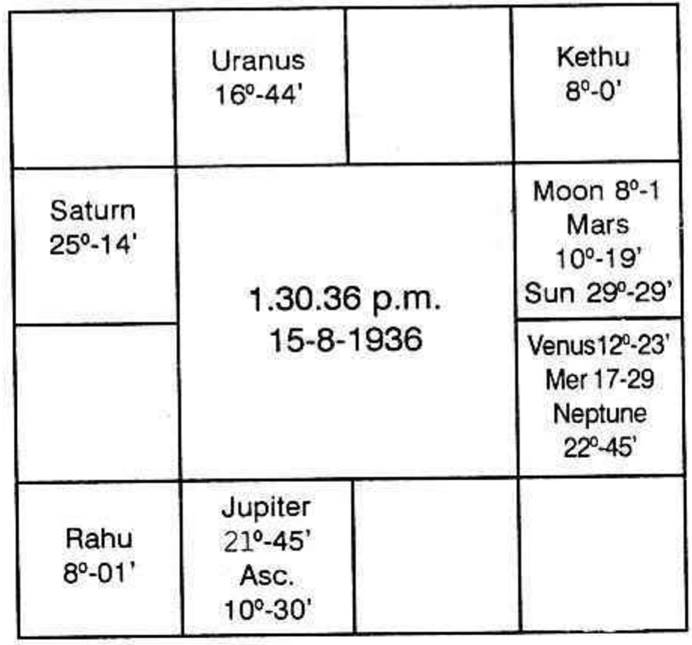
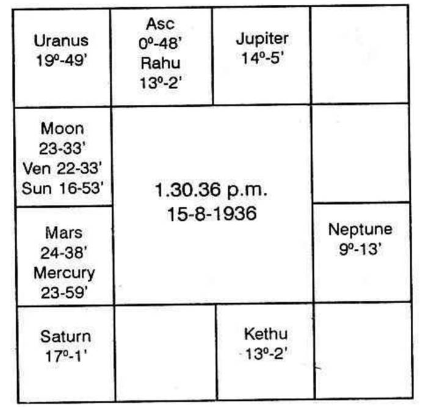
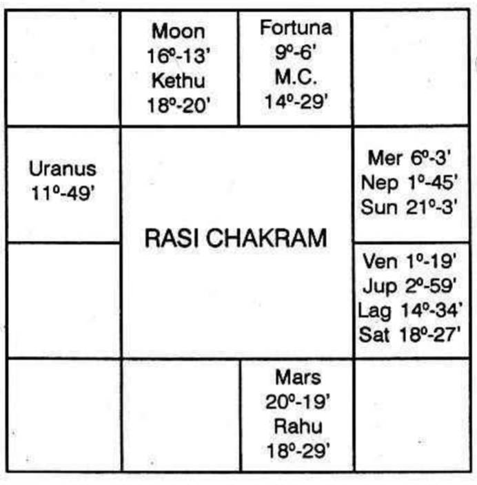

1. According to Westerners the fortune of a male is judged from (a) the strength of Moon (b) its position (c) the aspects received by Moon and (d) the applying aspect of Moon immediately after birth. For ladies, one is to consider the above in relation to Sun.
2. Planets owning and occupying the house 2 and 10.
3. Harmonious aspect between Sun and Moon: advantageous disposition of Jupiter and Venus in the Ascendant or in elevation: beneficial aspect from any planet to the second cusp; favourable aspect to Fortune in a beneficial house are promising factors for one to make fortune.
4. Evil aspects to the Meridian and to the lord of the Ascendant threaten difficulties and throw obstacles in inheriting the patrimony.
5. Benefics by nature, occupying the houses, 1, 4, 7 or 10, evil planets in 3 or 6 or 12 promises and if none is afflicted one can have a pleasant and prosperous life.
6. If slow moving planets form mutual favourable aspects and the luminaries also are strong and receive harmonious aspects, smooth and successful career throughout life is assured.
7. Planets close to second cusp with beneficial aspects from other, make one rich, planets close to meridian receiving good aspects improve one's status and luck.
8. Strong planets in the 8th house promise legacy, inheritance and sudden windfall.
9. Benefics in movable signs give sudden and substantial wealth; if they are in fixed signs, the income is steady; but if they are in common signs, it is difficult to hoard up money.
Mercury increases liquid cash, share certificates and documents, Jupiter indicates all varieties of property; palacial building, gold etc. Venus offers jewels, vehicles, furniture, garden; Saturn shows landed property; mine and antiques; Mars gives land and building; Sun for authority, power and gold; Moon for liquid cash and wet lands.
10. Uranus or Neptune in 5 gives the tendency to speculate, Good aspect to lord of 1, 2 and 11 promise unexpected gains by betting, race etc.
11. Fortuna causes fortune through the source indicated by the house occupied by it. The lord of the sign containing Fortune will make one rich if it receives beneficial aspect.
12. Note which planets forms favourable aspect with Fortuna. One becomes rich, through the matters signified by those planets. Uranus gives high position, covetable posts, honour etc. Also one may float big companies or follow novel and uncommon enterprises. If Neptune forms good aspect with Fortuna one will deal in big trade, smuggling, cheating, fraud, deception, swindling etc.
13. Pearce says that planets rising before Sun and setting after Moon promise one's income.
14. Planets above the horizon, strong by sign give determination and opportunity to come to the front of the public, be popular and be prosperous.
15. If Saturn or Jupiter rule the 8th house and if there is good aspect with Uranus, they produce gifts, legacies; if they rule the 4th or 10th house, they give inheritance (to majority of people nowadays, it can be taken as provident Fund; Gratuity, Compulsory savings etc.)
16. If Moon aspects adversely Mars or Saturn or Uranus in the second house, there will always be the financial trouble, endless and life long. Jupiter and Moon in adverse aspect threatens loss by imprudence and over liberal actions; Mars makes one extravagant and impulsive; though one may earn more and more, yet one will spend away everything.
According to Hindus, one becomes rich or poor depending on the various Rajayogas and Avayogas propounded by them. In practice it is not at all true in all cases. For example Hindus declare that one born with Gajakesari yoga or Lakshmi yoga will be popular, prosperous and rich. A few rich people may have this combination. But majority of the people, suffer from penury difficulties and lead an obscure life. These rajayogas are pleasant combinations for a few Traditional astrologers to encourage the consultant by giving false hopes and not appraising him of its advantages, the extent to which it can help and when. A cook has both Chandramangala yoga and Gajakesari yoga. They exist in his chart from his birth time. He could not study due to financial trouble; lost what little property he had; he took up this profession in a tea-stall; slowly he qualified himself to be a cook. His grievance is that he is a cook in a labour canteen and these yogas have not helped him to be at least a cook in any officers mess or quarters whereby he can gain some influence. If one studies these hundreds of yogas and applies practically, one will endorse as follows.
1. Existence of Rajayoga in a horoscope is not a guarantee that one will enjoy one's life. It is not universally applicable; it fails miserably and hence it is meaningless.
2. There are people rolling in wealth, holding responsible position without any yoga-as is said by Hindus;
3. It is not clearly stated by the authors, when such a yoga will be fruitful and how long: the extent to which it can give a lift; how far it is capable of mitigating other afflictions; can it completely ward off other evils; when one considers the horoscope of Lord Rama, one finds many yogas. Can such yogas get him separated from wife, be passing anxious time, have irregular food, taking those which are available, etc? If a soothsayer were to meet him, prior to the time when Hanuman was introduced, and if the soothsayer were to narrate all the Rajayogas in His Horoscope, what will be the reply of the person to whom the horoscope belongs?
In Bombay, I met an industrialist. He pays lakhs and lakhs as income tax and saves equally. In his horoscope there are 3 debilitated planets and no Rajayoga. When I came out of his room his clerk showed his horoscope. Four planets are found in yogas. Look at his fate? He asks the astrologer to recommend to his officer for a petty increment. If both the horoscopes are given to some one, following these Rajayogas, he will promote the clerk as the proprietor of the Industry and revert the proprietor as the clerk. Let me not write volumes on this Unscientific method of examining a horoscope.
The following is the general method followed by Hindus to ascertain whether one can earn and save or lose and suffer: -
1. One commands money if the second house is strong; If lord of 2 is exalted; or if is in a Kendra or Kona; but if it is weak, afflicted and ill posited one loses money, prestige and position;
2. Lord of 2 conjoined with or aspected by Jupiter, Mercury or Venus, makes one rich or intelligent orator or popular wealthy person;
3. Mutual exchange between the lords of 1, 2 and 11.
4. Lords of 2 and 9 in a Kendra;
5. Lords of 9 and 10 in any manner connected with each other;
6. Lords of 2, 6 and 11 in a Kendra or a Kona;
7. Lords of 2, 10 and 11 in similar position;
8. Jupiter and Venus in angle, lord of 2 in Gopuramsha or Simhasanamsa; or
9. Benefics in 3 or 6 or 10 or 11 counted from Moon sign make one rich;
10. 4 planets in their own quarters make the person wealthy;
11. Conjunction of Moon and Mars produces rich person;
12. If the owner of the Navamsa sign occupied by the lord of the 10th house, is in Vaiseshikamsa, and if it is aspected by benefics one becomes rich;
13. If benefics are posited in all the four angular houses, one amasses wealth;
14. Mercury in cancer and Saturn in 11 make one very rich;
15. Sun in 5 in Leo, Jupiter in Aquarius make one rich.
So, says, Mahadeva in Jataka Tatva. How general it is? How can such rules apply to all. Between 17th August and 17th September every year Sun will be in Leo. Once in 12 years, Jupiter will be in Aquarius. So, in that year, in this period of one month, both in the poor and the pleasant family many children will be born. Do they all become rich? Not at all. Not everybody. That is why, I stop here from giving further rules and dicta which are too general and not be helpful to the readers.
According to Krishnamurthi Padhdhati, one is to judge one's finance and fortune as follows:-
(a) Planets posited in the constellation of the occupants in the houses 2, 6, 10 or 11 are the strongest to give wealth to a person. These planets may be debilitated or may be in enemy's house. Still one's status will improve in their periods and sub-periods, if they are in the sub of the Significators of 2 or 6 or 11.
(b) The planets tenanted in the above said houses and occupying the sub of the singificators of 2, 6 or 11. These planets should not be afflicted by the lord of the constellations in which they are. They indicated increase in income and savings.
(c) The planets in the constellation of the lords of the houses 2 or 6 or 10 or 11 and is in the Sub of Significators of 2, 6. or 11.
(d) The lords of these houses in the Sub of the significators of 2, 6 or 11.
(e) Those which are conjoined with the significators or aspected by them.
Planets contribute to one's riches:-
(1) Provided the sub occupied by them are governed by the Significators of 2 or 6 or 11.
(2) Provided they are not adversely aspected.
If the sub lord is evil, one loses or one is unable to make money during the conjoined period of the planet and the sublord. The planet adversely aspecting, robs away the beneficial result during their conjoined periods.
Further, majority of planets either posited in the constellation of lord of 8 or 12 or in their subs in other constellations, threaten loss and poverty. They also indicate issue of cheques to repay loan or give away the share of profit.
If a planet owns 8 and 11, or 12 or 11 houses, then one can expect beneficial results during its period, in the sub period of other benefics being the Significactiors of 2, 6 and 11; in the sub period of evil planets one will lose. The ownership of an evil house and that of a favorable one by the same planet does not cancel one another and becomes neutral, but actually one will gain during its period, in the sub period of benefic and one will incur loss during other sub periods. Ultimately the profit and loss may be adjusted and the balance sheet may show 'NIL'. Yet there should be both the entries in the ledger; pleasure and profit as well as pain and loss.
One is fortunate, if majority of planets are strong, occupy beneficial constellation in movable sign and are in angular houses. Also the mutual aspects should be hornonious.
1. Sun in Aries, other than Parama Ucha point.
2. Sun in Cancer-passionate and poor.
3. Sun in Capricorn or Aquarius, poor.
4. Mars in Leo-cannot save.
5. Mars in Aquarius-miseries-poor.
6. Mercury in Aries or Scorpio-Swindles other's money, poor.
7. Mercury in Leo-penniless.
8. Mercury in Capricorn Aquarius-debts, overdraft.
9. Jupiter in Capricorn-poor, unhappy.
10. Venus in Cancer-expects help from others.
11. Saturn in Gemini, Virgo-loss of money-poor.
12. Saturn in Cancer-poor; in Leo-mean.
13. Lords of 1, 4 and 9 occupying 8th Bhava-very poor - loses wealth.
14. Lord of 2 in 12 and lord of 12 in 2, poor.
15. Lord of 2 in 12, lord of 12 in Lagna, aspected by lord of 7.
16. Lord of 5 or 6; lord of 9 in 8 aspected by lord of 2 or 7.
17. Malefics in 2, 4 or 5 counted from the sign occupied by Jupiter.
18. Even though benefics may be posited in the 10th house, malefics in the second house produce poverty.
19. Malefics in 3, lord of 12 in 2 and lord of 9 in 12 very poor.
20. Moon, Jupiter and Saturn in Kendra signs, Mars in 5 or 8 or 12 make one very poor.
21. Sun and Moon in Aquarius, other planets in debilitated signs makes even a King a poor person.
22. Venus in Capricorn, and the following planets in debilitation i.e. Mercury, Moon, Mars and Saturn show that even a Prince will lose his property and become poor.
23. Lord of 2 being weak, conjoined with or aspected by malefics makes one poor, especially when lord of Lagna is also weak.
24. Moon in the Sayana avastha-poor.
25. Mars in Nidra avastha-poor, distressed.
26. Malefics in 12 connected with Moon, loss of wealth by floods.
1. The source of one's wealth is from father, mother, enemy, friend, brother, wife or servant if Sun, Moon, Mars, Mercury, Jupiter, Venus or Saturn occupy the 10th house respectively.
2. How one acquires wealth is to be judged taking into consideration whether a planet is in its own sign, friendly or enemy's camp.
3. Benefics in 1, 2 and 11 show that a person acquires wealth by various means.
4. One commands moderate wealth, if Saturn is in Libra.
5. One rolls in money, if Jupiter is in Cancer or Sagittarius or Pisces, or if Saturn occupies either of the signs of Jupiter.
6. Venus conjoined with Mercury or Jupiter conjoined with Venus make one very rich.
7. Sun in Sagittarius make one rich.
8. Mars though debilitated in Cancer and exalted in Capricorn-in both signs contributes for wealth.
9. Sun either in 9 or in 11 endows one with wealth.
10. Mercury, Jupiter and Venus in Lagna shows that one will become very rich.
11. Moon conjoined with Mercury or Jupiter make one rich.
12. People born with Moon in Punarvasu, Pushya, Makham, Moolam, Sravanam, Poonvapadra and Revathi become rich.
13. Sun in Gemini, Mars in Aries or Scorpio, Jupiter in Aries or Scorpio, Venus in Gemini contribute for further riches.
14. Moon in Aries aspected by Mars, Moon in Taurus aspected by Venus. Moon in Sagittarius aspected by Jupiter markes one rich.
15. Jupiter in Prakasavastha is good for wealth.
16. Lord of 11 allows to save. Lord of Lagna permits to enjoy. If they are conjoined and also aspected by Moon, one becomes wealthy suddenly.
17. If the third Bhava is a beneficial sign and it is occupied or aspected by benefics one acquires wealth.
18. Benefics in the 4th house give ancestral property land, house, conveyance, etc. and contribute for further riches.
19. The mutual exchange between lords of 2 and 5.
20. Lord of 5 in 5 and lord of 9 in 9.
21. Conjunction of lords of 2, 5, 9 and 11.
22. Connection between lords of 2, 4, 9 or 11 and Full Moon aspecting any of the four lords.
23. Jupiter and Mercury in the second house.
24. Lords of 1, 2 and 11 in their own signs or in mutual exchange.
25. Lords of 2 and 11 in Lagna; (Mercury in Leo Ascendant, is good. But for other Lagna-borns, Mercury in Leo show loss of money.
26. Venus and Moon in 3, or Rahu in 4, 5, 10 or 11; Ketu in 8, will give wealth during their periods.
27. Sun in Devalokamsa and the lord of Lagna strong, endows with all kinds of wealth.
28. Lord of Lagna conjoined with Kendra lord gives wealth.
29. Lord of Lagna in 10, Sun in Lagna aspected by benefics.
30. Lord of Lagna conjoined with Jupiter in 2 or Kona or kendhra house.
31. Benefics in 5 or 11.
32. Lord of 2 in Gopuramsa.
33. Mars or Mercury in Kantukavastha gives wealth.
34. Lord of 7 or 5 is auspicious to command wealth at all times.
Sun in Bhojanavastha or Nidhraavastha, Jupiter in Netrapanya avastha, Venus in Aagamavastha threaten loss of wealth.
If lord of 7 occupies second house, one will regain those which would have been lost. (If lord of 7 is in sub of lord of 2, the same result - K. P.)
If lord of 8 is in 2 or 3, one's property will dwindle down and he cannot regain anything that is lost.
Malefics in the 8th house destroy wealth.
Malefics in 8 and 12 afflicting second house threaten loss.
In horary astrology, Malefic in 6 or 7 or 8 conjoined with lord of Lagna, shows loss of wealth and the lost one cannot be recovered.
Example Horoscopes of rich persons who gain crores of rupees every year. Very intelligent and noble gents: -

(a) How many planets are exalted?
(b) What are the Yogas?
(c) But note in which constellation the planets were posited.
Sun in the constellation of lord of 2 and 11.
Mercury " "
Mars " "
Rahu " lord of 10
Saturn " "
Jupiter " "
Moon " Rahu
Venus " Lord of 6

These four examples are given for students to study. Note whether there are the so-called Rajayogas.


The above horoscopes belong to the richest person in India. Look. Future promises more riches.

Born on Saturday at 7-10 A.M. L.M.T. on 7-8-1920 at 22'0' North and 73° 16' East.
Finance: Second house indicates bank position and self acquisition.
Sixth house denotes one's personal exertion, labour work and thereby earning money, or raising loan.
Tenth house shows one's profession either in service or in independent business as well as one's inheritance.
Sun is the chief governor for profession. Jupiter indicates the bank position. Fortuna portrays how one will be fortunate.
(Always take the Bhava [house] and not the signs to find out results as each house signifies certain matters.)
No planet is in the second, or the 6th or the 10th house. But Fortuna is in 10th sign and 9th Bhava.
As fortuna gives fortune to one in the period of the lord of the constellation in which it was posited and as it represents the lord of the star. Fortuna is to give the results of Sun, who rules the Lagna and Significator of houses 2 and 11 being deposited in Mercury Constellation. Fortuna was 9° 6' in Taurus. So according to Krishnamurti Padhdhati, Fortuna was in Venus sub and in the constellation of Sun. Therefore during the conjoined periods and sub periods of Sun and Venus, he will be fortunate. (Actually he took up service only in Sun Dasa, Venus Bhukti).
Mercury rules the second house. Its stars are Ashlesha, Jyeshta and Revathi. Sun alone was in Ashlesha star. Sun in Cancer, in the 12th house in Mercury's star, indicates that he will have security of service, permanency, mostly service under Government in a place, far away from his native place. It is in a movable sign. Therefore there will be change in the department and in the nature of work during the periods and sub periods of Sun, from one institution to another. He will be transferred with lien in the previous department or completely severing connection with the previous job. Also, Sun indicates that it will end his educational career and offer official life.
During Sun Dasa, Venus Bhukti, Jupiter Anthra in the end of December 1941, when Sun transited in Poorvashada star (governed by Venus in Jupiter's sign) he joined a Bank.
Sun also causes changes: on 1-5-1942 during Sun dasa, Venus Bhukti, Ketu Anthra he went to Rajkot: during Mercury sub in Ketu anthra, on 6-5-42 he joined the International Bank.
Again during Moon Dasa, Mars Bhukti, Sun Anthra, he left service in the Bank and joined Government service in the Revenue Department.
During Moon Dasa, Sun Bhukti he was promoted as class I Officer with a change in the place.
Thus Sun had been uniformly doing good in service matters.
Again, when he will run Rahu Dasa, Sun Bhukti, Jupiter Anthra, in the middle of March 1974, he can expect a higher rank with confidence. There will be increase in income and improvement in status.
Let us take the 6th house. As Leo is the ascendant, 6th house is Capricorn. Its lord is Saturn. Pushyam, Anuradha and Utharapadrapadha are the three stars governed by Saturn. Mercury is the only planet occupying Pushya. Hence Mercury indicates that
(a) he will be inspecting the accounts submitted by others or carrying out the instructions of other officials;
(b) as it is in a movable sign, there will be transfers and changes;
(c) Mercury will give long journey including overseas; and
(d) he may have to serve in international trade or foreign exchange or in exports and imports.
Saturn, as lord of 6, in the ascendant in the sign owned by Sun, in the constellation of lord of 10 Venus, and in the sub of Rahu who is an agent of Venus, indicates that he will be holding a position of trust and that he has to keep secrets. He will work in a department where the official matters are to be kept in strict confidence and should not be disclosed. Therefore, during the period of Saturn, he will be entrusted with such a work. He may be asked to unearth some facts which were unaccounted, but possessed by the parties. As Saturn was in the constellation of Venus, lord of 10, he will be crowned with success. Not only will he be able to do the job most satisfactorily, but it will also be recognised and he will have an outstanding confidential report during Saturn's sub periods. When he was running Rahu dasa, Jupiter bhukti, Saturn anthra in May 1962, he came to this department. Saturn Bhukti commenced on 13-6-1964. Thereafter, he had been doing such a work and it is sure that he will be establishing a good name.
(Generally 10th house is termed as Karmasthana: it includes doing the last rites to father and mother, to do religious functions, yagnas, etc., and to work and make money. That is why, those who enjoy promotion during the period of lord of 10, also lose either of the elders. 10th house is the second to the 9th (denoting father) and the seventh to the 4th (indicating mother) 2 and 7 are Maraka Sthanas. Hence death of either of the parents and promotion in services come together. It is worthy to note that his father passed away immediately after Saturn Bhukti started, as it was in the constellation of lord of 10. Since 9th house indicates father, and birth was in Leo, Aries is the 9th house and Saturn is the Bhadhaka Sthanadhipathi to Aries. Hence, Saturn affected the longevity of father, on 27-6-'64 on Saturday in Uthrashada star when Moon transited in Saturn's sign and in the constellation of the chief governor for father-Sun. Also Saturn transited in Sathabhisha star in Saturn's sign and Rahu's star. When one is running Rahu dasa Saturn bhukti, one will realise those results which are indicated by the planets in birth-chart, when they transit in the star of Rahu in Saturn's sign, i.e., Sathabhisha. This is an important ruling of the editor. (If the Bhukti is ruled by Mercury, the significator is to transit in Mercury's sign and Rahu's star Arudhra. If the sub period is ruled by Venus, the significators have to transit in Rahu's star Swathi in Venus sign-Libra.)
The 10th house is Taurus. It is ruled by Venus. No planet occupies Taurus. Therefore consider Venus and planets occupying Venus star-Bharani, Poorvapalguni and Poorvashada are the three stars under the reign of Venus.
Moon and Ketu are in the star Bharani; Saturn is in Poorvapalguni. No planet in Poorvashada star. Hence Saturn, Moon and Ketu are under the sway of Venus and whatever Venus is to offer, would be given during the periods of Moon, Ketu and Saturn.
Moon indicates changes, transfers and life in a far-off place. Ketu shows a thorough change. Saturn offers responsible position.
Venus owns two houses, Taurus and Libra. Taurus is the 10th house. As Venus owns it, find out whether Rahu or Ketu occupies either Taurus or Libra. Then the node is stronger than Venus. As Rahu was in Libra, at the time of birth, Rahu will prove to be fortunate. Actually, he had a good lift on 15th July, 1959, when Rahu Dasa, Rahu Bhukti, Rahu Anthra was operating; Swathi was the Nakshathra on that day.
Jupiter, the chief governor for finance, is conjoined with Venus. So Jupiter will be favourable. As it was in Ketu's star Makam and Ketu was in the 9th house, during Jupiter sub period, he was transferred to the north-east. Actually he was transferred to the administrative head office, in a town north-east of the place where he was, and became popular. The officials, the colleagues and all those with whom he came in contact, speak highly of his straightforward, honest and fair dealings. Integrity and sincerity stand to his credit. Thus it will be seen that:
(a) Rahu is the strongest benefic;
(b) Mercury gives good opportunity to show the talent during inspection.
(c) Mars adds authority and power;
(d) Venus bestows on him social and financial success;
(e) Sun offers a permanent position in the Government;
(f) Jupiter increases income, changes the residence and office and improves status. It gives service in the Revenue Department;
(g) Moon indicates fortune in a foreign place, and so on.
(1) Rahu Dasa, Sani Bhukti, Rahu anthra, Sukra Shookshma November 1966-promotion.
(2) Rahu Dasa, Budha Bhukti, Moon Anthra-June 1968-Overseas.
(3) Rahu Dasa, Budha Bhukti, Rahu Anthra-October 1968-promotion.
(4) Rahu Dasa, Ketu Bhukti, Sani Anthra-worries and anxieties-May 1970.
(5) Rahu Dasa, Venus Bhukti, Jupiter Anthra-very popular and climax in career-November 1972-different nature of work.
(6) Rahu Dasa, Mars Bhukti, Jupiter Anthra. A covetable post will be offered in July, 1976.
(7) Retirement: Jupiter Dasa, Sani Bhukti, Ketu Anthra March 1980.